Blowfish will only bundle the KaTeX assets into your project if you make use of mathematical notation. In order for this to work, simply include the katex shortcode within the article. For example, just include {{< katex >}} at the beginning of your article and any KaTeX syntax on that page will then be automatically rendered.
CSAPP #
阅读CSAPP的笔记。
各个lab在其他的文件夹中。
0. 读前准备 #
其实在此之前（读前之前）已经接触到了Linux相关的命令行操作了（如使用GitBash来从本地将更新的代码push到远端；或者用picgo把本地图片上传到远端，再用pull指令拉到本地文件夹）。
之后看到网上说vim是编辑器之神（这里网上包括知乎、csdn、南大的ICS课程的课前准备），便去详细了解了一下vim的使用，并对其进行了外观的配置，变得更加好看了。
说一下我对vim的感受：无gui的按钮操作，全部都是键盘按键完成（当然这是在关闭鼠标操作设置的前提下，不过我发现即使开启了鼠标的操作功能，在root下开启vim会使用最最最原始的配置），
而且这个编辑器既然是存在于Linux系统中的，于是可以编写各种代码如python、cpp，并随时保存和在命令行中（编译和）运行，实际上与windows系统中的pycharm或者vscode功能是差不多的。
但是配置完成后真的很酷啊！效果图如下（第二张是设置了JetBrains Mono字体的）：
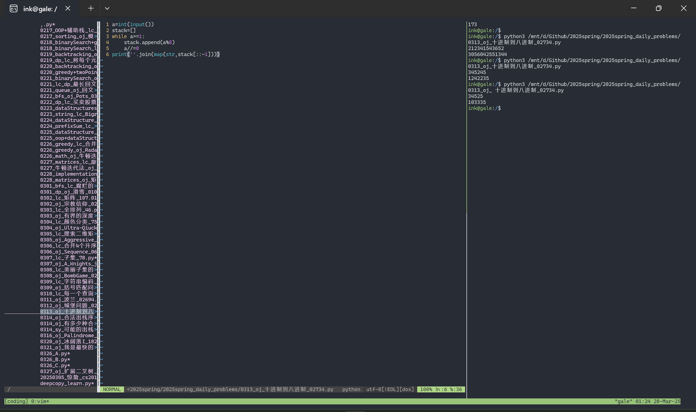 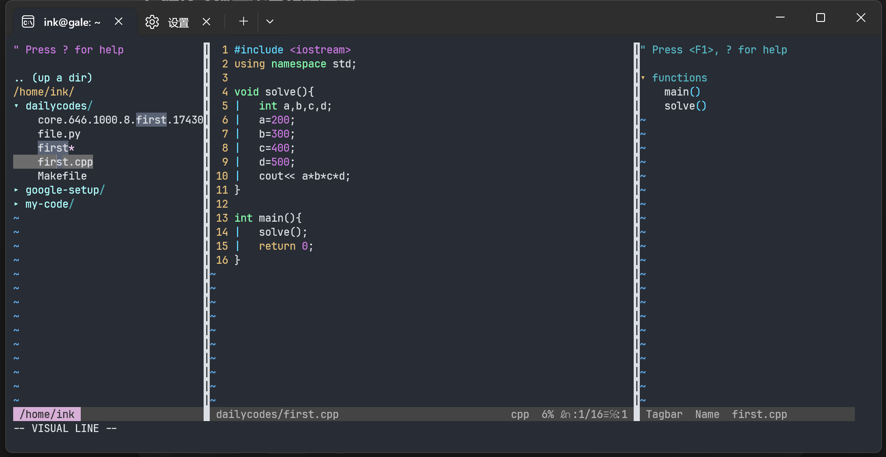
这里附上我配置vim参考的链接教程：https://blog.csdn.net/qq_42417071/article/details/139027077 。
对vim的配置主要是对vimrc的内容进行修改，第一步是先对其复制得到一个拷贝，粘贴到~下，重命名为.vimrc，每次访问的命令就是：ink@gale:~$ vim .vimrc。我把配置文件内容都放在了这个repo的vimrc文件夹我的 Vim 配置中，可以用来参考。
（尽量实现了类似于vscode编辑代码时的自动功能，但仍有一些不完善的地方，..也懒得改了主要是我自己不太会写shell脚本，需要靠互联网和gpt和deepseek三者辅助修改，比较麻烦吧）
此外，在vim中下载了tmux的包，这样可以在一个窗口中建立多个pane，如在左侧写py代码，在右侧随时执行这个文件，实现和pycharm类似的功能（我的配置中设置了\1作为热键在完成操作：
保存当前代码文件:w->向右侧pane中发送指令python3 %->将光标移到右侧pane中（这样方便输入测试数据））
其实最后用的还是vscode的ssh（（有点难绷
1. 计算机系统漫游 #
2. 信息的表示和处理 #
2.1 信息存储 #
- 8位=1字节
内存由一大块字节数组组成，每个字节都由一个唯一的数字来标识，这个数字就是它的地址。所有可能地址的集合就是虚拟地址空间。相当于把整个内存看出一个字典，键是唯一标识数字–地址，值是这个地址对应的内存位置的这个字节所存的内容
✔️二进制、十进制、十六进制的转换：
- bin<->hex 二进制转十六：从后往前分割4位，逐个转换；
十六转二进制：逐位转换
当x=2^n时，二进制为1后面跟n个0，当n=i+4j时，对应十六进制：0x(2^i)(0j) 2048=2^11, 11=3+42, 0x800 2. dec<->hex 十进制转十六：不断做除法取余数，最后用stack反转结果
十六转十进制：从地位到高位乘16的对应次方
✔️寻址和字节顺序： 每个字节都有一个编号数字来标识，叫做其地址。那么一个字节是8位，对应到十六进制中就是两个数字（或者a到f中的字母）。
对于一个int类型的变量x（假设是32位的），假设十六进制值位0x01234567，那么它的内存地址是需要4个字节的，每个字节保存俩个数字。 同时对于跨越多个字节的对象，这个对象的地址是所使用的所有字节中最小的地址。假设x变量的地址为0x100（说明四个字节地址最小的为0x100）
在保存时采用一块连续的内存地址，有两种方式：最低有效字节在前面（**小端法**）和最高有效字节在前面（**大端法**），
则对于连续字节地址：0x100,0x101,0x102,0x103，采用大端法为：01,23,45,67，小端法为:67,45,23,01。
EX:
hello, world!在大段和小端中存储方式是一样的。
但是在表示字符串的时候，无论是大端法的机器还是小端法的机器，输出的结果都是按照字符串的前后顺序，因为字符串的末尾是null。
对于代码的编译，不同系统上的指令编码是不同的，因此二进制代码很少能在不同机器之间移植。
✔️位级运算：
布尔运算：
与& 或| 异或^ 取反~ 位移» «
逻辑运算：
and &&; or ||; not ! 返回值都是0或者1
p && *p 防止解引用空指针
一个常见用法是实现掩码运算，例如位级运算x&0xFF生成一个由x的最低有效字节组成的值，比如：
0x2342A4EF & 0xFF = 0xEF。而掩码~0将生成一个全为1的掩码。
利用是：要取出x的最高三字节：x&0xFFFFFF00
要取出x的最低一字节：x&0xFF
bitset(x,y):把y是1的位置在x中设为1 –> (x | y)
bitclean(x,y):把y是1的位置在x中设为0 –> (x & ~y)
实现异或：x ^ y == bis(bic(x,y), bic(y,x)) --> x ^ y == (x & ~y) | (~x & y)
注意位级运算与逻辑运算的差别，&&如果左侧为假直接返回0而不判断右侧，||如果左侧为真直接返回1而不判断右侧，x==y <-> !(x^y)
✔️位移运算：
| 操作 | 值 |
|---|---|
| x | [01100011] [10010101] |
| x « 4 | [00110000] [01010000] |
| x » 4(逻辑右移) | [00000110] [00001001] |
| x « 4(算术右移) | [00000110] [11111001] |
逻辑位移不逻辑，不保留符号位只无脑右移
注：在Java中，x»>4才是逻辑右移。算术右移会根据正负补齐高位，逻辑右移只会补0.
优先级：移位运算优先级比加减法要低。
2.2 整数表示 #
✔️整形数据类型：
C数据类型在32位和64位的整数取值范围只有long和unsigned long有区别：32为2**32-1；64为2**64-1.
在x86-64中：
char : 1 byte
short: 2 bytes
int : 4 bytes
float: 4 bytes
long : 8 bytes
pointer: 8 bytes
✔️无符号数的编码(正整数)： 对于一个有$w$位的整数数据类型，可以把位向量写成$\overrightarrow{x}$，且每一位的取值为0或1。那么可以给出无符号数的编码定义：
对向量$\overrightarrow{x}=[x_{w-1},x_{w-2},\cdots,x_0]$:
$$B2U_w(\overrightarrow{x}) \doteq \sum_{i=0}^{w-1} x_i2^i$$其中$B2U_w$为Binary to Unsigned的缩写，长度为w。
与此同时，无符号数编码具有唯一性，即函数$B2U_w$是一个双射。
那么当向量表示为$[11…1]$时最大值为$2^w-1$，表示为$[00…0]$时最小值为$0$.
✔️补码的编码(负整数)： 对于负数值的表示，常常使用补码（two’s-complement）形式表示，将字的最高有效位解释为负权（negative weight）。给出补码定义：
对向量$\overrightarrow{x}=[x_{w-1},x_{w-2},\cdots,x_0]$:
$$B2T_w(\overrightarrow{x}) \doteq -x_{w-1}2^{w-1}+\sum_{i=0}^{w-2} x_i2^i$$其中$B2T_w$为Binary to Two’s-complement的缩写，长度为w。
$B2T_w([0101])=5$
$B2T_w([1011])=-5$
与此同时，补码编码具有唯一性，即函数$B2T_w$是一个双射。
那么当向量表示为$[011…1]$时最大值为$2^{w-1}-1$，表示为$[100…0]$时最小值为$-2^{w-1}$.
对于字长w=8，给出表示整数的最值：
$UMax_w = 2^w-1=255=0xFF$
$TMax_w = 2^{w-1}-1=127=0x7F$
$TMin_w = -2^{w-1}=-128=0x80$
$-1=[11111111]=0xFF$
$0=[00000000]=0x00$
TIPS：
- $(1):|TMin|=|TMax|+1$，$(2):UMax=2TMax+1$.且在有符号表示中，-1为全为1的串。
- 对于32位的机器，由8个十六进制数字组成的，且开始的那个数字（最高的第8位）是8-f之间的任何值，都是一个负数。但是0x8048337是一个整数（补高位0）。
补充： 还有两种标准的表示方式和： 反码（Ones’ Complement）
$$B2O_w(\overrightarrow{x}) \doteq -x_{w-1}(2^{w-1}-1)+\sum_{i=0}^{w-2}x_i2^i$$原码（Sign-Magnitude）
$$B2S_w(\overrightarrow{x}) \doteq (-1)^{x_{w-1}} \cdot (\sum_{i=0}^{w-2}x_i2^i)$$✔️有符号数和无符号数之间的转换：
基本原则：数字的位表示不变，仅仅改变理解这个位表示的方式。
强制类型转换的结果保持位值不变，只是改变了解释这些位的方式。
此外，在有符号和无符号进行比较时，会将有符号数隐式转换为无符号数，例如-1 > 0u是正确的。因为-1会被转为UMAX-1。
- 补码转为无符号数：
其中满足$TMin_w \leq x \leq TMax_w$
- 无符号数转为补码：
其中满足$0 \leq x \leq UMax_w$
- C语言中有符号数与无符号数的表示
遵循一个最基本的原则：给定一个数字，其二进制的底层表示是固定不变的，而最终这个数字表示的含义要根据自己赋予其的数据类型去解释。 比如对于2^31（2147483648），其十六进制表示为0x80000000，如果是int类型（4字节，有符号数），那么最高位（第32位）为1，说明这是一个负数（最高位是8-f的都是负数）， 根据$T2U_w$的公式得知其表示的数字实际上为-2147483648；如果是unsigned类型（4字节，无符号数，可以写成2147483648u/U），那么最高位解释为正权值， 因此表示为正的2147483648。然而，尽管在两种表示方式下数值是不同的，其二进制表示形式是一致的，只是对二进制的解释方式的差别导致的数值的大小差别。
在对数值进行比较时，如果两个数分别为有符号和无符号，那么会将有符号隐式地转为无符号进行比较，即有如下布尔值：
2147483647 > -2147483647-1 –> 均为有符号 –> true
2147483647u > -2147483647-1 –> 将右侧的有符号转为无符号（+2147483648） –> false
✔️扩展一个数字的位表示：
- 无符号数的零扩展
直接在最高位补0即可。
- 有符号数的符号扩展
保持与当前最高位一致，向前补齐，是1补1，是0补0.
TIP： 对于有符号数，可以把高位的1都删去，直到这一连续的1串只剩下1个1的时候，数值是相等的，比如： -5=[1011]=[11011]=[111011]
✔️截断数字：
从汇编代码的视角去看：
小到大：先扩展，按照原来的符号位进行符号位扩展，然后存大的字节
大到小：直接存对应大长度的寄存器，然后读取低位到目标内存
- 截断无符号数
$令\overrightarrow{x}是一个w位的向量，而\overrightarrow{x’}是将其截断为k位的结果。令x=B2U_w(\overrightarrow{x}), x’=B2U_k(\overrightarrow{x’})。则有x’=x \mod 2^k。$
- 截断有符号数
$令\overrightarrow{x}是一个w位的向量，而\overrightarrow{x’}是将其截断为k位的结果。令x=B2U_w(\overrightarrow{x}), x’=B2T_k(\overrightarrow{x’})。则有x’=U2T_k(x\mod2^k)。$
2.3 整数运算 #
2.3.1 无符号加法 #
原理1：
无符号数加法：
对满足 $0 \leq x,y < 2^w$ 的 $x$ 和 $y$ 有：
$$ x +_w^{u} y= \begin{cases} x+y,\ x+y<2^w\ (正常)\\ x+y-2^w,\ 2^w \leq x+y < 2^{w+1}\ (溢出)\\ \end{cases} $$检测无符号整数加法是否发生了溢出：
如果和s< x(or s < y)，则发生了溢出。
原理2：
无符号数求反：
对满足 $0 \leq x,y < 2^w$ 的 $x$ ，其w位的无符号逆元$-_w^{u}x$由下式给出：
$$ -_w^{u}x = \begin{cases} x,\ x=0\\ 2^{w}-x,\ x>0\\ \end{cases} $$对十六进制数字先变为dec，然后计算逆元，再变为16进制
2.3.2 补码加法 #
原理：
补码加法：
对满足 $-2^{w-1} \leq x,y \leq 2^{w-1}-1$ 的 $x$ 和 $y$ 有：
$$ x +_w^{t} y= \begin{cases} x+y-2^w,\ 2^{w-1} \leq x+y \ (正溢出)\\ x+y,\ -2^{w-1} \leq x+y < 2^{w-1} \ (正常)\\ x+y+2^w,\ x+y < -2^{w-1}\ (负溢出)\\ \end{cases} $$(考虑负溢出为什么必定是加 $2^w$ :因为从w+1位截断到w时，首位的1后面的第二位必定是0，否则这个数字就大于w位的最小负值了，见上面的TIP)
检测补码加法和减法是否溢出:
对于减法，如果x和y的符号位不同，且x-y的符号位也与x不同，说明发生了溢出。 也就是 (sx ^ sy)&(sx ^ (sd)) == 1, 其中sd = (x - y) » 31
对于加法，如果x和y的符号位相同，且x+y的符号位与x不同，说明发生了溢出。 也就是 (~(sx ^ sy))&(sx ^ (sd)) == 1
2.3.3 补码加法 #
一个易错点是，TMIN是0x80000000，当取相反数时，-TMIN = ~TMIN + 1 = TMIN，即TMIN的相反数是其本身。
2.3.4&5&6&7 乘法和除法 #
相当于先乘法，然后截断到低位。
有符号只是在最后多加一步，将位级解释为有符号即可。
如果乘数的2的幂次，那就相当于左移幂次。
考虑乘数为K，其位表示中存在从位置n到位置m的连续的1，有两种形式计算：
- $(x « n) + (x « (n-1)) + … + (x « m)$
- $(x « (n + 1)) - (x « m)$
对于除以2的幂次，
- 定义整数除法是向零舍入。
- 除以2的幂的无符号除法：直接右移k位，会向0取整。（也就是向下取整）
- 除以2的幂的补码除法：直接右移k位，会向下取整。
- 综合2和3，可以发现，对于有符号和无符号，如果直接使用右移操作符，得到的效果都是向下舍入的。即$x»k = \lfloor x / 2^k \rfloor$
- 如果想要让负数向上舍入，可以加上一个偏置 biasing值，由于除数的2^k，那么偏置值就是2 ^ k-1，也就是：$(x+(1«k)-1)»k = \lceil x / 2 ^k \rceil$。
- 综合3和5，可以发现，在C语言中可以用一行代码实现真正的除以2^k的操作，也就是，我们想要实现的是不管这个数字是正还是负，我们都想要向0舍入，那么就可以写为：
(x < 0 ? x+(1 << k)-1 : x) >> k，这样可以完美计算x/2^k。
总结：整数除法定义为向0舍入，但是直接右移会导致向下舍入，因此对于负数要加上一个偏置来保证向0舍入。
2.4 浮点数 #
IEEE浮点表示
目的是给定x和y，来表示形如$x \times 2^y$的数。
$V = (-1)^s \times M \times 2^E$
其中，
- s(sign)是符号位，决定是负数还是正数
- E(exponent)是阶码，对浮点数加权。解释为无符号数，通过偏置解释为有符号数。
- M(significand)是尾数，是一个二进制小数，在规格化值中范围是$1 \sim 2-\epsilon$，在非规格值中范围是$0 \sim 1-\epsilon$，原因是在规格化中有一个隐含的前置0。
| 类型 | 位数 | s | exp | frac |
|---|---|---|---|---|
| float | 32 | 1 | 8 | 23 |
| double | 64 | 1 | 11 | 52 |
- 规格化的值
- 当exp不全为0也不全为1时，阶码的值$E = e - Bias$，其中偏置$Bias = 2^{k-1}-1$（单精度是127，双精度是1023），因此整体的范围，对于单精度是-126
127，双精度是-10221023。 - 此时的小数字段frac是f，尾数$M = 1 + f$，有一个隐含的1。
- 当exp不全为0也不全为1时，阶码的值$E = e - Bias$，其中偏置$Bias = 2^{k-1}-1$（单精度是127，双精度是1023），因此整体的范围，对于单精度是-126
- 非规格化的值
- 当阶码都是0时，阶码$E = 1 - Bias$，尾数$M = f$，无隐含的1。
- 特殊值 当阶码都是1时，小数为0时得到的值是正负无穷；小数非0时成为NaN。
如下图可以直观看出几类数字的范围。
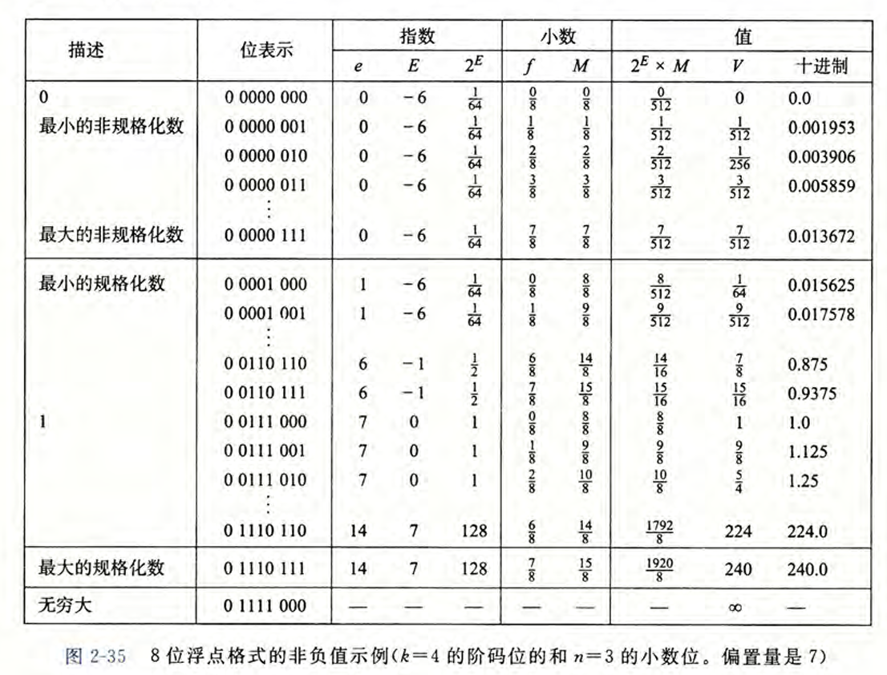
一个属性：对于正数，将位表示看为无符号数，大小与小数的原本大小是一致的；而负数则是相反的。则可以用过以下代码实现对浮点数的比较：
unsigned int float_to_uint(float f) {
unsigned int u = (unsigned int) f;
// 如果是负数，翻转所有位
if (u >> 31) {
return ~u;
} else {
return u | 0x80000000; // 正数：最高位置为1
}
}整数转为浮点数：
例如对于12345，0b11000000111001，
- 先将小数点左移13位，得到1.(…) * 2^13，括号内有13位，
- 将括号内后面补10个0，构成23位的小数部分，
- 阶码无符号的值为13+127=140，即0b10001100，
- 再填上符号位的0，得到最终float的二进制表示。
/*
* float_i2f - Return bit-level equivalent of expression (float) x
* Result is returned as unsigned int, but
* it is to be interpreted as the bit-level representation of a
* single-precision floating point values.
* Legal ops: Any integer/unsigned operations incl. ||, &&. also if, while
* Max ops: 30
* Rating: 4
*/
unsigned float_i2f(int x) {
int sign = (1 << 31) & x, first1, idx, exp, frac, mask = 0x7fffff, out,
if (x == 0) return 0;
if (x == (1<<31)) return 0xcf000000;
if (sign) x = -x;
for (idx = 31; idx >= 0; idx--) {
if (x >> idx) {
first1 = idx;
break;
}
}
exp = first1 + 127;
x <<= (31 - first1);
frac = (x >> 8) & mask;
out = x & 0xff;
if (out > 0x80 || (out == 0x80 && (frac & 1))) {
frac = frac + 1;
}
if (frac >> 23) {
frac = frac & mask;
exp++;
}
return sign | (exp << 23) | frac;
}舍入：
IEEE浮点格式定义了四种不同的舍入方式，分别是：
- $向偶数舍入$，是默认的方式。舍入的结果是使得最低有效数字是偶数。
- 比如1.4舍入为1，而1.5和2.5舍入为2。
- 对于二进制数字，仍然考虑舍入之后的最低位的偶数性。对于形如$XXX.YYYY100$的数字，当最后一个Y为将要舍入的位时，这种舍入方式才生效。当这个Y是0时，采用向下，把1抹去；当这个Y是1时，采用向上，使得Y变为0进位。
- $向零舍入，向下舍入，向上舍入$
浮点运算：
- 由于舍入的问题，实数运算具有交换律，但不具备结合律。例如，
(3.14 + 1e10) - 1e10 = 0.0，因为舍入3.14被丢掉。 - 浮点加法满足单调性，如果 $a \ge b, \forall x, x + a \ge x + b $。
- 可以保证，只要 $ a \ne NaN $，就有 $ a *^f a \ge 0 $。
强制类型转换中的舍入：
- int -> float: 数字不会溢出，但是有可能被向偶数舍入。
- int/float -> double: 能保留精准的数值。
- double -> float: 可能会溢出；也可能被向偶数舍入。
- float/double -> int: 值会向零舍入。
3. 程序的机器级表示 #
3.1 程序编码 #
机器级代码：
程序计数器（PC，%rip）给出将要执行的下一条指令在内存中的地址。
使用linux> gcc -Og -S mycode.c来获得汇编文件mycode.s。
这一章的内容阅读教材即可，都是指令的记忆和熟悉，我在第一次月考之前通过拟合往年题也对于一些知识点有了更深的了解，比如结构体对齐、指针运算等等，这里稍微留下一些记录吧。此外，这一章关于汇编代码的考察集中在02-bomblab中，对于栈的理解和对程序的攻击的考察集中在03-attacklab中，通过做lab也可以对本章内容有更深入的理解和掌握。
3.2 结构体对齐 #
对于struct和union，对齐要求是：
- 结构体/联合体的首地址：必须是其内部最大基本数据类型成员大小的整数倍。
- 结构体每个成员相对于结构体首地址的偏移量：必须是该成员自身大小的整数倍。如果不能满足，需要在成员之间填充（padding）空白字节。 (注意，这里说的是每个成员的地址，下面有示例说明)
- 结构体总大小: 必须是最大对齐数（结构体内部最大基本数据类型成员大小）的整数倍。如果不能满足，需要在最后一个成员后填充空白字节。(如果struct里面存放了union，按照union中的最大对齐数来计算而不是整个union的大小)
- 联合体的大小：是其内部所有成员中占用空间最大的成员的大小。
示例：
struct A {
char a; // 1 byte
int b; // 4 bytes
short c; // 2 bytes
};
struct B {
char a; // 1 byte
short b; // 2 bytes
int c; // 4 bytes
};对于结构体A：
a占用1个字节，偏移量为0。b占用4个字节，需要对齐到4的倍数，因此a后面填充3个字节。b的偏移量为4。（这里对应了上面规则的第二条，不能直接把int放在char后面，因为char后面的地址是1，不是4的倍数，所以要补三个字节的padding，此时地址是4，可以放int了）c占用2个字节，需要对齐到2的倍数，c的偏移量为8。- 结构体总大小需要是 4 的倍数。当前大小是 10，需要填充2个字节，所以总大小为12。
对于结构体B：
a占用1个字节，偏移量为0。b占用2个字节，需要对齐到2的倍数，因此a后面填充1个字节。b的偏移量为2。c占用4个字节，需要对齐到4的倍数，c的偏移量为4。- 结构体总大小需要是4的倍数。当前大小是7，需要填充1个字节，所以总大小为8。
union MyUnion {
int a; // 4 bytes
double b; // 8 bytes
char c[10]; // 10 bytes
};MyUnion 的大小将是 16 字节，因为 char c[10] 是最大的成员，占10字节；但是最大成员长度是8，整个union的大小需要是8的倍数，所以扩展到16字节。
union MyUnion {
int a; // 4 bytes
double b; // 8 bytes
char c[10]; // 10 bytes
};
struct MyStruct {
union {
short a;
char b[3];
} u;
char c;
};
int main(){
MyUnion myunion;
MyStruct mystruct;
cout << sizeof(myunion) << endl; // 16
cout << sizeof(mystruct) << endl; // 6
cout << sizeof(mystruct.u) << endl; // 4
}注意输出的第二个是6而不是8。因为即使union的大小是4，在struct中仍然按照union内部的最大的类型来作为union所代表的最大大小（也就是short的两字节），因此struct中末尾的一个char的1字节之后，为了保持两字节的倍数，从5字节扩展到6字节。
3.3 指针运算 #
C 语言允许对指针进行运算，而计算出来的值会根据该指针引用的数据类型的大小进行伸缩。也就是说，如果 p 是一个指向类型为 T 的数据的指针，p 的值为 $ x_p $，那么表达式 p+i 的值为 $ x_p + i * sizeof(T)。 $
这是教材的原话，下面给出一个例子：

这里面s.u的大小是4，s的整体大小是24。看CD选项，取地址符号取出来地址，然后对地址运算，实际上和指针运算是一致的。我们给出这样的计算方式：
其中addr1 addr2分别是两个地址的值，相减之后的结果是实际地址的差值除以地址内部所保存的值的类型大小。这道题中，两个地址之间的实际差值是16，但是需要除以指针所指向的类型的size，也就是short的2字节，所以答案是8而不是16。
3.4 浮点数 #
- 请问对于正int类型的数字，第一个无法用float精确表示的值是？
答案是2**24+1，这是因为float只有23位的尾数，将这个int类型转为float的时候末尾的1会由于向偶数舍入原则被约去，导致精度缺失。
- 给定一个实数， 会因为该实数表示成单精度浮点数而发生误差。不考虑 NaN 和 Inf 的情况， 该绝对误差的最大值为（舍入方式为向偶数舍入）？
答案是2**103，计算方式是，对于尾数每间隔一个值差值是2**(-23)，那么这个差值被精度舍去后造成的实际误差是差值的一半；让阶码部分取到规格化数的最大值1111 1110，数值是254，再减去偏置值127得到指数部分的幂是127，则答案就是2**(127) * (1/2)*2**(-23) = 2**(103)。
4. 处理器体系结构 #
4.1 Y86-64指令与指令编码 #
ISA: 一个处理器支持的指令和指令的字节级编码称为它的指令集体系结构(Instruction-Set Architecture)，是硬件和软件之间的过渡与承接口。

CISC 和 RISC 的对比：
- CISC（复杂指令集）：指令多而强大，一条复杂指令能干好多事
- RISC（精简指令集）：指令少而简单，需要多条简单指令组合完成复杂任务
相比于RISC，CISC的指令多，硬件复杂使得软件简单，指令长度变长，寻址方式多（RISC通常只有load/store），寄存器数量少（RISC使用寄存器密集的过程链接）。
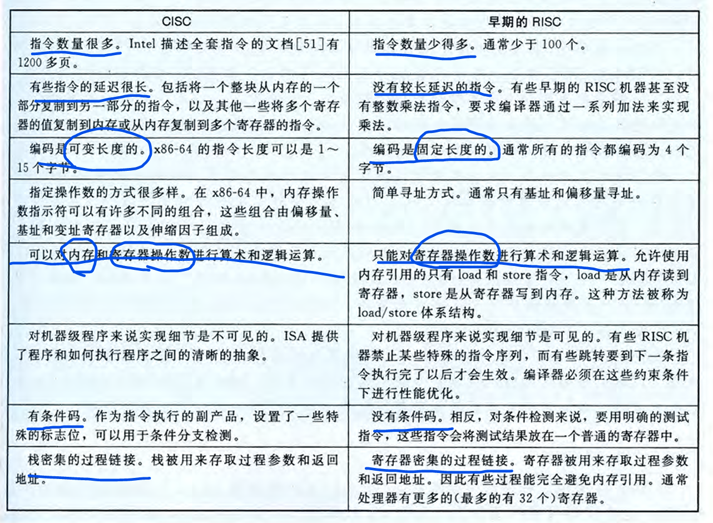
4.2 逻辑设计和硬件控制语言HCL #
要实现一个数字系统需要三个主要的组成部分：计算对位进行操作的函数的组合逻辑、存储位的存储器单元，以及控制存储器单元更新的时钟信号。
HCL(Hardware Control Language 硬件控制语言)
对于寄存器文件，读取是随时读取的，写入则是在边沿触发时才发生的。大多数时候寄存器都保持在稳定状态，产生的输出就是当前的状态。只有当时钟变为高电位的时候，输入的信号才会加载进寄存器并在一段延迟过后输出新的状态。而写入过程是由时钟信号控制的，当时钟上升时，输入的值才会被写入输入的dstW上的寄存器。
细节：比如执行mov $3,%rax的时候，在访存阶段结束后，刚刚进入写回阶段的开始，valE和rax才刚刚加载进写回的寄存器中。然后，需要等到该阶段结束时、进入下一个阶段的时候，此时产生高电位的边沿，输入的值3才会被写入输入的寄存器rax中。这在流水线的数据冒险中需要有一定理解。因为假设此时恰好下面有一条指令是在进行译码操作，那么读取是随时进行的，输入rax的寄存器名称就会马上输出其值，然而此时上方的rax却还没更新。
4.3 Y86-64的顺序实现 #
将处理一条指令划分为6个阶段。

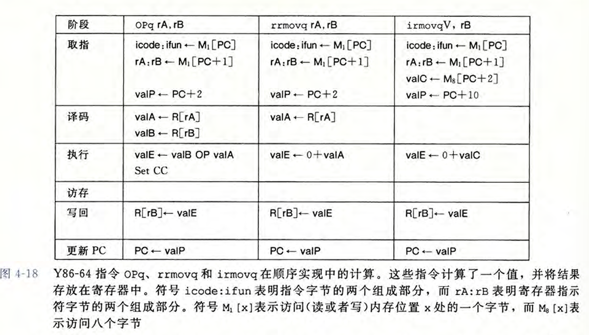 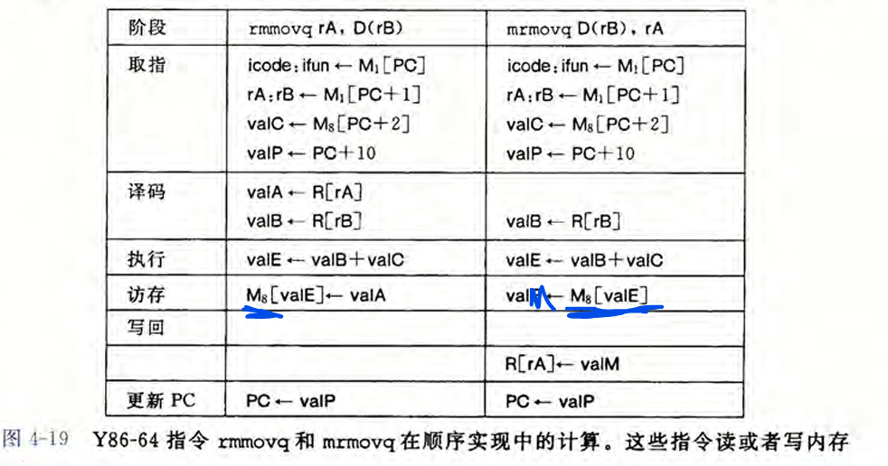 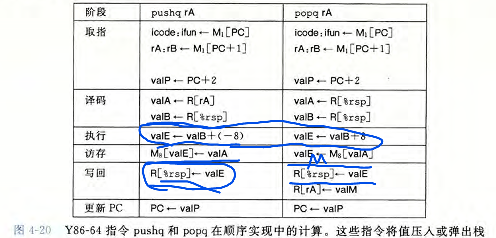 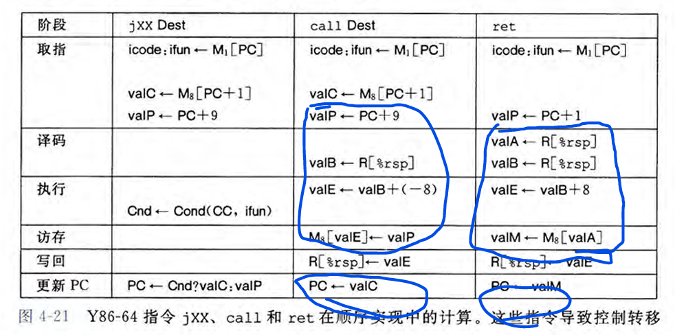 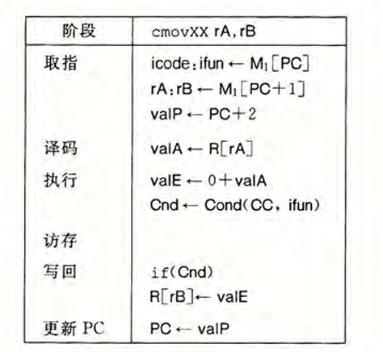
4.4 Y86-64的流水线实现 #
- 预测错误，需要在JXX进入到M阶段才能检查E阶段产生的cc是否成立。在f_pc中检查
if M.icode==JX && !M.cnd，如果成立说明预测错误，此时流水线中已经进入了两条新指令，我们需要取消这两条指令，并且让pc指向JXX后面的地址。策略是使得f_pc取M.valA，同时让F阶段正常取指，D和E阶段都bubble掉。注意M.valA在其D阶段中已经确定了valA的来源是JXX跳转的地址。
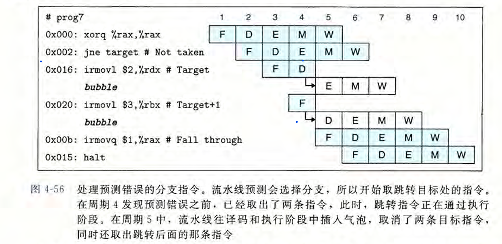
- ret指令，由于需要待其进入M阶段才能读出下一条指令地址，当到达M时已经有3条新的指令了，需要连续bubble三次才能清空此时的流水线。所以在f_pc中检查
if W.icode==RET，如果成立说明接下来的pc应该取W.valM，同时让F阶段暂停，D阶段bubble掉。注意W.valM是在刚刚的M阶段从内存取出的valM传递到W阶段寄存器的值。
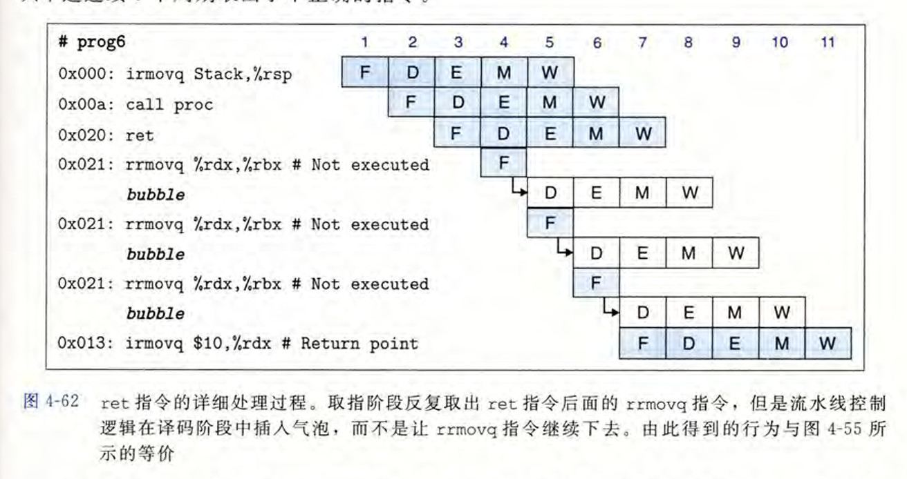
- load/use冒险，由于上一条指令需要到M阶段才能读出来值而下一条需要在D阶段解析，需要让F和D阶段stall，E阶段bubble掉，这样使得下一条指令的D能延迟到上一条的M，这样就能直接数据前递，让D中的值取
m_valM即可。注意m_valM是在此时M阶段刚刚计算出来的valM的值。
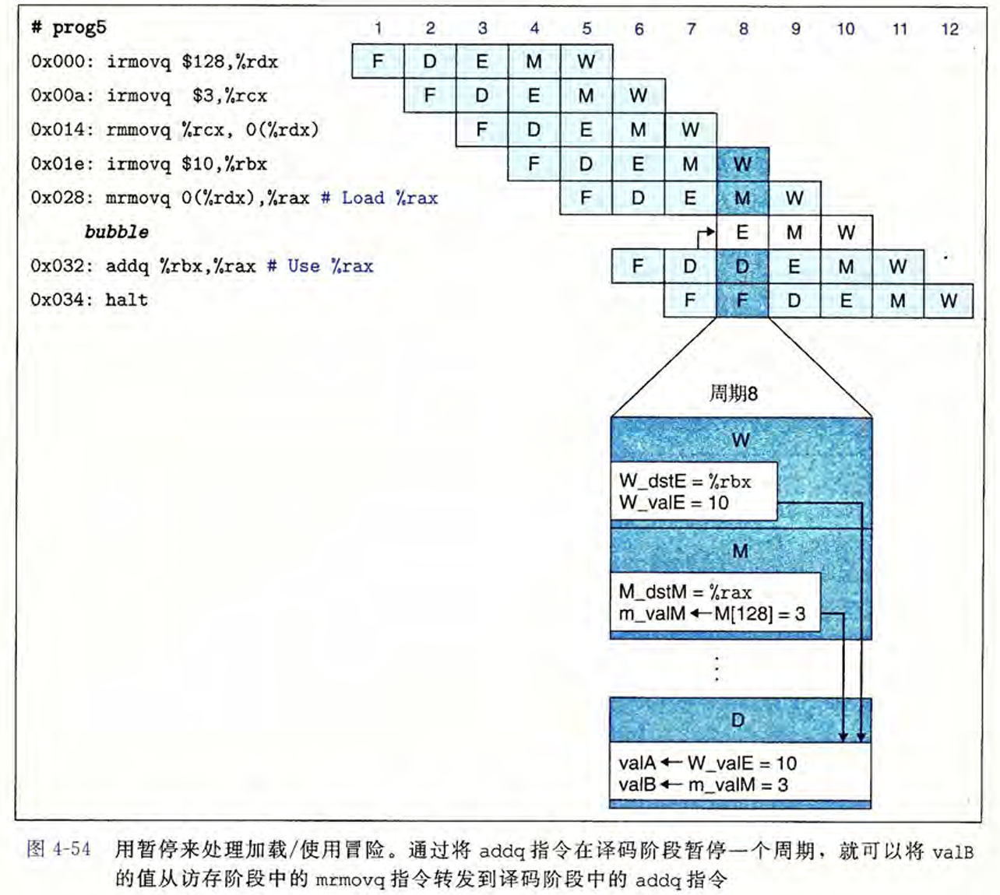
对上者总结就是下图：

在流水线设计中，预测pc值是这样的：
// What address should instruction be fetched at
u64 f_pc = [
// Mispredicted branch. Fetch at incremented PC
M.icode == JX && !M.cnd : M.valA;
// Completion of RET instruction
W.icode == RET : W.valM;
// Default: Use predicted value of PC (default to 0)
1 : F.pred_pc;
];在D阶段，考虑到对于valA和valB的数据前递，对于二者的取值有一定的优先级顺序，具体如下：
- 如果是
CALL或者JX，将d_valA设置为D.valP，这个值实际上是为JX预测错误准备的。同时，这个值也是JX Dest执行之后的紧邻着的指令地址。实际上对于JX，在F阶段就已经将pc默认设置为Dest继续执行了；然后我们会在M阶段判断这个跳转到底对不对，如果不对，那么我们就需要获取JX Dest这个指令的下一个指令的正确地址；而这个地址我们在此时就放进d_valA，然后不断传递到M_valA，便于在f_pc中进行预测下一个pc的值。而对于CALL而言这个valA实际没有作用。 - 接下来就要考虑是否要数据前递了。而前递的优先级是阶段越靠前优先级越高，这是因为靠前说明这个指令是与当前指令距离近的（或者说是在当前指令之前的指令中，最迟的那一条指令），这样的话，我们找到了最近的那个先前指令可以保证要传递的数据是最新的可能要被更新的数据。
- 如果不需要前递，就使用从
rA寄存器读取的值就行了。
// What should be the A value?
// Forward into decode stage for valA
u64 d_valA = [
D.icode in { CALL, JX } : D.valP; // Use incremented PC
d_srcA == e_dstE : e_valE; // Forward valE from execute
d_srcA == M.dstM : m_valM; // Forward valM from memory
d_srcA == M.dstE : M.valE; // Forward valE from memory
d_srcA == W.dstM : W.valM; // Forward valM from write back
d_srcA == W.dstE : W.valE; // Forward valE from write back
1 : d_rvalA; // Use value read from register file
];
u64 d_valB = [
d_srcB == e_dstE : e_valE; // Forward valE from execute
d_srcB == M.dstM : m_valM; // Forward valM from memory
d_srcB == M.dstE : M.valE; // Forward valE from memory
d_srcB == W.dstM : W.valM; // Forward valM from write back
d_srcB == W.dstE : W.valE; // Forward valE from write back
1 : d_rvalB; // Use value read from register file
];再来看逻辑控制，F阶段不可能会bubble，只会stall，什么时候会stall？在load/use的时候会和D一起stall；在ret的时候也会stall等待ret从M中读取新pc值。所以有：
// Should I stall or inject a bubble into Pipeline Register F?
// At most one of these can be true.
bool f_bubble = false;
bool f_stall =
// Conditions for a load/use hazard
E.icode in { MRMOVQ, POPQ } && E.dstM in { d_srcA, d_srcB } ||
// Stalling at fetch while ret passes through pipeline
RET in {D.icode, E.icode, M.icode};注意，load/use必须是从内存中load才行，所以只会有MRMOVQ和POPQ可能造成。
在D阶段，什么时候会bubble？在ret的时候会将之后的三条指令都bubble掉；在预测错误的时候也会和E一起bubble掉两条无用指令。所以有：
bool d_bubble =
// Mispredicted branch
(E.icode == JX && !e_cnd) ||
// Stalling at fetch while ret passes through pipeline
// but not condition for a load/use hazard
!(E.icode in { MRMOVQ, POPQ } && E.dstM in { d_srcA, d_srcB }) &&
RET in {D.icode, E.icode, M.icode};在D阶段，什么时候会stall？在load/use的时候会和F一起stall。
bool d_stall =
// Conditions for a load/use hazard
E.icode in { MRMOVQ, POPQ } && E.dstM in { d_srcA, d_srcB };在E阶段，当load/use的时候会bubble；当预测错误的时候会bubble；不会stall。
// Should I stall or inject a bubble into Pipeline Register E?
// At most one of these can be true.
bool e_stall = false;
bool e_bubble =
// Mispredicted branch
(E.icode == JX && !e_cnd) ||
// Conditions for a load/use hazard
E.icode in { MRMOVQ, POPQ } && E.dstM in { d_srcA, d_srcB };教材课后题中提到了一种叫做加载转发的技术。考虑这样的load/use问题：
mrmovq 0(%rcx),%rdx # Load 1
pushq %rdx # Store 1
nop
popq %rdx # Load 2
rmmovq %rax,0(%rdx) # Store 2一般的load/use需要在store的时候将F和D暂停，等到load到达M的时候进行数据前递。一般的判断方式是这样的：
E.icode in {IMRMOVQ, IPOPQ} && E.dstM in {d_srcA, d_srcB}这样的原因是，use的时候是需要在D阶段解析出来的。但是在这里的Load1和Store1中，use虽然也需要在D阶段解析%rdx的值，但是真正需要使用它却是在访存的M阶段。而当它到达M的时候，Load已经到达了W阶段（在没stall的情况下），此时是可以将W_valA直接传递到M中的，而这个W_valA来自Load在M中读出来的m_valM。类似的，真正使用load值是在M阶段的除了pushq以外还有rmmovq。所以在增加了这一加载转发技术之后，判断发现load/use冒险的逻辑公式就变成：
E_icode in {IMRMOVL,IPOPL} &&
E_dstM in {d_srcA} && !(D_icode in { IRMMOVQ, IPUSHQ })
E_dstM in {d_srcB}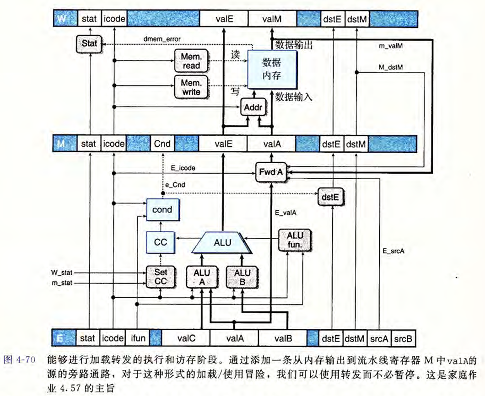
6. 存储器层次结构 #
- 易失性存储器：
- SRAM 速度快，成本高，结构复杂（每单元有6个晶体管），容量小
- DRAM
- 非易失性存储器
- ROM（只读存储器），但并不是全部都是只能读不能写
- HDD(Hard Disk Drive) 圆盘机械结构，容量大，怕震动，成本低
- SSD(Solid State Drive) 抗震，速度快，有擦写次数限制


7. 链接 #
7.1 符号解析 #
/*
未初始化的全局变量--COMMON
未初始化的静态变量 & 初始化为0的全局和静态变量 -- .bss
初始化了的且不为0的全局和静态变量 -- .data
*/
/*
extern int a;
int foo(); 这些都是只**声明**，如果没有引用则不会出现在符号表中
int a;
int a = 1; 这些都是定义，会出现在.bss或者.data中，分配内存
int foo(){} 这种是定义，会出现在.text中
*/
int val_global_undef; // C
int val_global_init0 = 0; // B
int val_global_init = 111; // D
static int s_val_global_undef; // b
static int s_val_global_init0 = 0; // b
static int s_val_global_init = 123; // d
int *val_ptr_undef;
// extern int e_val_global_undef[]; // 如果没有被使用就不产生在符号表中，被使用（引用）是U
/* extern */int sum_declaration(int *a, int n); // 函数默认有extern，如果不被使用就不会产生在符号表中
/* extern */int sum_definition(int *a, int n){return 3;} // 并非纯声明，有定义，出现在T中
int array_undef[2]; // C
int array_init[2] = {1, 2}; // D
int foo() { // T
int foo_val_undef;
int foo_val_init_0 = 0;
int foo_val_init = 1234;
static int sfoo_val_undef; // b
static int sfoo_val_init_0 = 0; // b
static int sfoo_val_init = 214; // d
return foo_val_init;
}
int main() { // T
// int *val = &e_val_global_undef[0];
int val = 1;
return val;
}7.2 与静态库的链接 #
静态库是一个归档文件(archive file)，它包含了多个目标文件(object file)。静态库的文件名通常以.a结尾，比如libm.a。
链接器是这样使用静态库来解析引用的：
- 维护三个关键集合：
- 可重定位目标文件集合(E)：最终将被合并到可执行文件中的
.o文件列表。 - 未解析符号集合(U)：当前已被引用（例如通过extern声明），但尚未找到其定义的所有符号。
- 已定义符号集合 (D)：到目前为止，所有由已添加到 E 中的文件所定义的符号。
- 初始化与命令行扫描：
链接器初始化 E, U, D 为空。然后从左到右依次扫描命令行上给出的文件（包括目标文件 .o 和静态库 .a）。
- 针对不同类型的文件，链接器采取不同操作：
-
遇到目标文件 (.o)：
- 无条件地将此 .o 文件加入集合 E。
- 将此 .o 文件中定义的所有符号加入 D。
- 将此 .o 文件中引用的、但尚未在 D 中找到定义的符号加入 U。
-
遇到静态库 (.a)：
- 将 .a 文件视为一个“目标文件的归档包”。链接器会遍历库中的所有成员目标文件（如 libc.a 中的 printf.o, malloc.o 等）。
- 对于库中的每一个成员目标文件，链接器检查：该成员文件是否定义了 U 中当前列出的某个未解析符号？
- 如果 是，链接器就将该成员 .o 文件从库中“提取”出来，像处理普通目标文件一样处理它（即加入 E，更新 D 和 U）。
- 如果 否，链接器就简单地跳过这个成员文件。
- 对库中所有成员文件检查完毕后，链接器就继续处理命令行上的下一个文件。
- 扫描结束与结果判断：
- 当命令行上所有文件都扫描完毕后，链接器进行检查：
- 如果 U 为空：恭喜，所有符号引用都已成功解析。链接器合并 E 中的所有 .o 文件，生成最终的可执行文件。
- 如果 U 不为空：链接器报错 “undefined reference to xxx”，链接失败。
如依赖关系： p.o → libx.a → liby.a → libz.a 和 liby.a → libx.a → libz.a，给出使得静态链接器能够解析所有符号引用的最小的命令行:
gcc p.o libx.a liby.a libx.a libz.a7.3 重定位符号引用 #
- 重定位条目
typedef struct {
long offset;
long type:32,
symbol:32;
long addend;
} Elf64_Rela;offset：需要重定位的地址相对于节(section)起始地址的偏移量。
type：重定位的类型，决定了如何计算重定位地址。比如：R_X86_64_PC32表示PC相对引用，R_X86_64_32表示使用32为绝对地址的引用。
symbol：符号表中符号的索引，表示需要重定位的符号。
addend：一个常数值，通常用于调整计算结果。对于PC32这个值是-4；对于PC64这个值是-8。
- 重定位PC相对引用
- 首先，遍历每一个节s，它是一个字节数组；并遍历节s中的每一个重定位条目r。
- 对于每一个重定位条目r，我们需要两个数字：
refptr：需要重定位的地址，计算方式是节s的起始地址加上r.offset。这个地址是在未链接时需要改写的地址。在改写之前，refptr位置是全0的4个字节（对于32位）。*refptr：这个需要重定位地址处应该填写的真实数字，计算方式是：
- 获取节s的运行时地址（记为ADDR(s)），加上r.offset，得到refptr的运行时地址，记作
refaddr。 - 获取符号表中索引为r.symbol的符号的运行时地址（记为ADDR(r.symbol)），减去在刚刚获取的
refaddr，再加上r.addend，得到*refptr的值。
- 最后，将
*refptr的值写入到refptr位置，完成重定位。
- 重定位绝对引用
- 首先，遍历每一个节s，它是一个字节数组；并遍历节s中的每一个重定位条目r。
- 对于每一个重定位条目r，我们需要两个数字：
refptr：需要重定位的地址，计算方式是节s的起始地址加上r.offset。这个地址是在未链接时需要改写的地址。在改写之前，refptr位置是全0的4个字节（对于32位）。*refptr：这个需要重定位地址处应该填写的真实数字，计算方式是：
- 获取符号表中索引为r.symbol的符号的运行时地址（记为ADDR(r.symbol)），再加上r.addend，得到
*refptr的值。
- 最后，将
*refptr的值写入到refptr位置，完成重定位。
总结一下：首先我们需要找到在链接之前，需要改写地址的地方，也就是节s的地址+r.offset，这里起初是全0的。然后我们根据r.type来决定如何计算这个地址应该被改写成什么值。如果是PC相对引用，那么我们需要用符号的运行时地址减去这个地址（在运行时的该地址）再加上addend；如果是绝对引用，那么我们只需要用符号的地址加上addend。最后将计算出来的值写入到需要改写的地址处。
给出代码：
foreach section s {
foreach relocation entry r in s {
refptr = s.start_address + r.offset; // 此处是需要进行改写的地方
if (r.type == R_X86_64_PC32) {
refaddr = ADDR(s) + r.offset; // 计算出refptr在运行时的地址
*refptr = ADDR(r.symbol) - refaddr + r.addend; // 计算出需要写入refptr的值
} else if (r.type == R_X86_64_32) {
*refptr = ADDR(r.symbol) + r.addend; // 计算出需要写入refptr的值
}
}
}9. 虚拟地址 #
9.1 概述 #
整体框架和优化的流程：
最开始，CPU在请求数据的时候，是直接通过发送**物理地址(PA, Physical Address)来访问磁盘(Disk)**中的数据的，这个过程是非常低效的，因为磁盘的访问时间非常长。
为了提升访问效率，引入了虚拟内存(Virtual Memory)的概念，CPU不再直接发送物理地址PA，而是发送虚拟地址(VA, Virtual Address)，通过内存管理单元(MMU, Memory Managing Unit)和操作系统完成对VA到PA的翻译过程，然后再通过PA去访问磁盘中的数据。MMU是存储在CPU内部的。
但是这个过程仍然是非常低效的，因为每次CPU访问数据都需要经过MMU进行地址翻译，然后再去磁盘中查找数据，磁盘的访问时间还是非常长。所以为了优化访问磁盘的时间效率，采取缓存策略，也即利用 DRAM 来对磁盘中的数据进行缓存，这样CPU访问数据时，先通过MMU翻译VA得到PA，然后先在DRAM中查找数据，如果找到了就直接返回给CPU；否则再去磁盘中查找数据。如果在DRAM中没有找到数据，这个过程称为 缺页(page fault)，需要操作系统的内核介入，将对应的磁盘数据加载到DRAM中，然后再返回给CPU。（见下方第一个贴图）
在MMU中进行地址翻译的时候，涉及到VA到PA的映射关系，这个映射关系是通过页表(Page Table) 来实现的。页表存储了VA到PA的映射关系，当MMU接收到一个VA时，会查找页表，找到对应的PA，然后再去DRAM或磁盘中查找数据。页表是存储在DRAM中的，因此MMU在进行地址翻译时，可能需要访问DRAM来获取页表信息，这个过程也会影响访问效率。
那为了提升页表的访问效率，引入了快表(TLB, Translation Lookaside Buffer)，TLB是一个小型的缓存，专门用于存储最近使用的VA到PA的映射关系。当MMU接收到一个VA时，首先会在TLB中查找，如果找到了对应的PA，就直接返回给CPU；否则再去DRAM中的页表查找。如果在TLB中没有找到对应的映射关系，这个过程称为 TLB缺失(TLB miss)，需要访问DRAM中的页表来获取映射关系，然后将其加载到TLB中，以便下次访问时可以更快地找到。TLB是存储在CPU内部的，因此访问速度非常快。
下面给出一个使用markdown语法绘制的整体框架图：
graph TD
subgraph CPU [CPU Chip]
direction TB
A[CPU Core] --> B[MMU];
B --> C[TLB];
subgraph Cache [CPU Cache]
D[L1/L2/L3 Cache];
end
end
subgraph Main Memory [Main Memory DRAM]
E[Page Tables];
F[Cached Disk Pages];
end
subgraph Persistent Storage [Persistent Storage]
G[Disk/SSD];
end
%% Data Request Path
A -- "Virtual Address (VA)" --> B;
B -- "Check TLB" --> C;
C -- "TLB Hit<br>Get PA" --> B;
C -- "TLB Miss" --> E;
B -- "Physical Address (PA)" --> D;
D -- "Cache Hit" --> A;
D -- "Cache Miss" --> F;
F -- "Page Found in DRAM<br>(Cache Hit)" --> D;
F -- "Page Fault<br>(Not in DRAM)" --> G;
G -- "OS Loads Page to DRAM" --> F;
E -- "Page Table Walk<br>Get PA" --> B;
%% Styling
linkStyle 0 stroke:green,stroke-width:2px;
linkStyle 1 stroke:blue,stroke-width:2px;
linkStyle 2 stroke:green,stroke-width:2px;
linkStyle 3 stroke:blue,stroke-width:2px;
linkStyle 4 stroke:green,stroke-width:2px;
linkStyle 5 stroke:green,stroke-width:2px;
linkStyle 6 stroke:blue,stroke-width:2px;
linkStyle 7 stroke:green,stroke-width:2px;
linkStyle 8 stroke:blue,stroke-width:2px;
linkStyle 9 stroke:red,stroke-width:2px;
linkStyle 10 stroke:red,stroke-width:2px;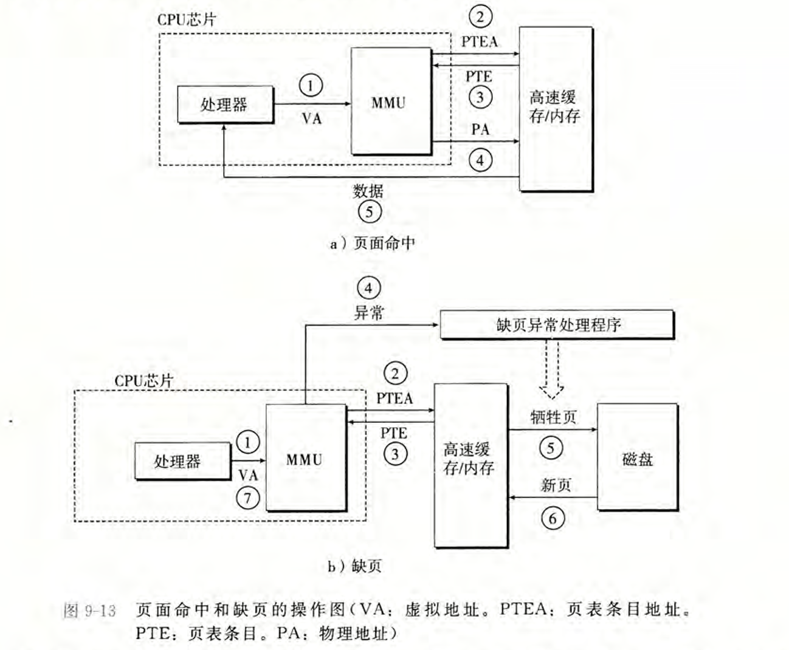
9.2 Linux虚拟内存系统 #
Linux 为每个进程维护了一个单独的虚拟地址空间。

9.2.1 Linux虚拟内存区域 #
Linux 将虚拟内存组织成一些区域（也叫做段）的集合。一个区域(area)就是已经存在着的（已分配的）虚拟内存的连续片(chunk), 这些页是以某种方式相关联的。

通过阅读linux源码发现在v6.1之前（不包含6.1），虚拟内存确实是按照csapp书中图上这样的组织方式进行的；而在v6.1及以后的版本中，mm_struct中不再有vm_area_struct，变为一个maple_tree的结构来管理虚拟空间。这里先看看书中所说版本的代码：
在/include/linux/sched.h中定义了struct task_struct，可以在其中找到成员struct mm_struct *mm，也就是上图中的第一个指针；
// /include/linux/sched.h
struct task_struct {
...
struct mm_struct *mm;
...
}在/include/linux/mm_types.h中定义了struct mm_struct，如下：
// /include/linux/mm_types.h
struct mm_struct {
...
struct vm_area_struct *mmap; /* list of VMAs */
struct rb_root mm_rb;
...
}在/include/linux/mm_types.h中定义了struct vm_area_struct，如下：
// /include/linux/mm_types.h
struct vm_area_struct {
unsigned long vm_start; /* Our start address within vm_mm. */
unsigned long vm_end; /* The first byte after our end address
within vm_mm. */
/* linked list of VM areas per task, sorted by address */
struct vm_area_struct *vm_next, *vm_prev;
struct rb_node vm_rb;
...
struct mm_struct *vm_mm; /* The address space we belong to. */
pgprot_t vm_page_prot; /* Access permissions of this VMA. */
unsigned long vm_flags; /* Flags, see mm.h. */
}可以发现这些区域(vm_area)是以链表方式组织的，且更具体是使用红黑树组织的，可以发现在mm_struct中有嵌入的struct rb_node mm_rb；在vm_area_struct中有嵌入的struct rb_node vm_rb。事实上，在后面提到的缺页处理中查看某个虚拟地址是否合法的时候，利用红黑树的结构能够快速地判断，且mm_rb作为根节点、vm_rb作为其余节点进行查询。有关红黑树的具体内容见9.2.3的内容。
9.2.2 Linux缺页异常处理 #
假设MMU在试图翻译某个虚拟地址A时，触发了一个缺页。这个异常导致控制转移到内核的缺页处理程序，处理程序随后就执行下面的步骤:
- (1) 虚拟地址A是合法的吗？换句话说，A在某个区域结构定义的区域内吗？为了回答这个问题，缺页处理程序搜索区域结构的链表，把A和每个区域结构(
vm_area_struct)中的vm_start和vm_end做比较。如果这个指令是不合法的，那么缺页处理程序就触发一个段错误，从而终止这个进程。这个情况在下图中标识为"1"。
因为一个进程可以创建任意数量的新虚拟内存区域，所以顺序搜索区域结构的链表花销可能会很大。因此在实际中，Linux在链表中构建了一棵红黑树，并在这棵树上进行查找。
-
(2) 试图进行的内存访问是否合法？换句话说，进程是否有读、写或者执行这个区域内页面的权限？例如，这个缺页是不是由一条试图对这个代码段里的只读页面进行写操作的存储指令造成的？这个缺页是不是因为一个运行在用户模式中的进程试图从内核虚拟内存中读取字造成的？如果试图进行的访问是不合法的，那么缺页处理程序会触发一个保护异常，从而终止这个进程。这种情况在下图中标识为"2"。
-
(3) 此刻，内核知道了这个缺页是由于对合法的虚拟地址进行合法的操作造成的。它是这样来处理这个缺页的:选择一个牺牲页面，如果这个牺牲页面被修改过，那么就将它交换出去，换人新的页面并更新页表。当缺页处理程序返回时，CPU重新启动引起缺页的指令，这条指令将再次发送A到MMU。这次，MMU就能正常地翻译A，而不会再产生缺页中断了。

9.2.3 红黑树在虚拟内存中的应用浅析 #
注：以下代码均来自于Linux v5.0。
写这一小部分的动机是原书上提到了：

我想看看在源码中怎么实现红黑树的，就去https://elixir.bootlin.com/linux中搜索了一下，具体如下：
9.2.3.1 红黑树节点的定义 #
在/include/linux/rbtree.h中给出了节点的定义：
// /include/linux/rbtree.h
struct rb_node {
unsigned long __rb_parent_color;
struct rb_node *rb_right;
struct rb_node *rb_left;
} __attribute__((aligned(sizeof(long))));
/* The alignment might seem pointless, but allegedly CRIS needs it */
struct rb_root {
struct rb_node *rb_node;
};
// 后续还有很多操作函数的声明
可以发现一个节点的成员有：父亲节点的指针、左右子孩子的指针，并且父亲节点的颜色作为第三位与父节点指针组合在了一起。原因是节点地址按照64位对齐，那么每个节点的地址的第三位势必都是0，而颜色只有红黑两种，只需一位就可以进行标记，那么就有了__rb_parent_color = rb_parent_addr | rb_parent_color。想要取出来父节点地址也很简单，只需要把低3位置0即可。（这里和动态内存分配中的隐式空闲链表的头部尾部设计是类似的，由于空闲块地址都是64位对齐的，低三位必定都是0，那么就可以利用这3位来标记当前块是空闲的还是已分配的了，具体见下图）

此外在这个文件中还有一些比较关键的宏定义，例如在文件/include/linux/kernel.h中所定义的container_of宏：
// /include/linux/kernel.h
/**
* container_of - cast a member of a structure out to the containing structure
* @ptr: the pointer to the member.
* @type: the type of the container struct this is embedded in.
* @member: the name of the member within the struct.
*
*/
#define container_of(ptr, type, member) ({ \
void *__mptr = (void *)(ptr); \
BUILD_BUG_ON_MSG(!__same_type(*(ptr), ((type *)0)->member) && \
!__same_type(*(ptr), void), \
"pointer type mismatch in container_of()"); \
((type *)(__mptr - offsetof(type, member))); })这个宏的名称就很直白：取某某的容器，具体地看，其作用是利用ptr指针减去该指针到其所处结构体起始地址的偏移量(offsetof(type, member))，以获得该指针所处结构体的起始地址的指针。这个宏解决的问题是：只知道结构体中某个成员的指针，如何获得整个结构体的指针？运算方式就是：
其中BUILD_BUG_ON_MSG：如果不匹配，编译时报错；((type *)0)->member：使用空指针访问成员，仅在编译时，不实际执行。而offsetof是编译器内置功能，计算成员在结构体中的偏移量。({ }) 是一个表达式，有返回值，保持宏的表达式的特性可以赋值。
此外，该文件还对其进行了一层包装：
// /include/linux/rbtree.h
#define rb_entry(ptr, type, member) container_of(ptr, type, member)这样的好处是，可以将红黑树的节点嵌入到其他数据结构当中，也就是说可以将一个struct rb_node *rb_node节点作为成员放在其他数据结构中。这样的好处是，当我们在红黑树中查找到一个节点时，可以通过rb_entry宏来获取包含该节点的更大结构体的指针，从而访问该结构体的其他成员。在进行红黑树操作时，这种方式非常有用，因为我们通常需要访问包含节点的结构体的其他信息，而不仅仅是节点本身。下面可给出一个具体的例子来说明：
struct my_data {
int value;
struct rb_node node; // 红黑树节点作为成员
};
// 假设我们有一个指向红黑树节点的指针 rb_node_ptr
struct my_data *data_ptr = rb_entry(rb_node_ptr, struct my_data, node);在这个例子中，rb_entry 宏将 rb_node_ptr 转换为指向包含该节点的 my_data 结构体的指针 data_ptr，从而可以访问 my_data 结构体中的其他成员（如 value）。而这些其他成员正好可以作为红黑树节点的附加信息使用，比如在插入节点时进行的比较规则。
9.2.3.2 红黑树在虚拟内存中的应用 #
我找到了在9.2.2中提到的缺页异常处理的代码逻辑，位于/arch/x86/mm/fault.c中，下面省略非常繁杂的判断部分只给出缺页处理中可能会遇到的三种情况的部分（段错误、保护异常、合法缺页）：
// /arch/x86/mm/fault.c
/*
* Handle faults in the user portion of the address space. Nothing in here
* should check X86_PF_USER without a specific justification: for almost
* all purposes, we should treat a normal kernel access to user memory
* (e.g. get_user(), put_user(), etc.) the same as the WRUSS instruction.
* The one exception is AC flag handling, which is, per the x86
* architecture, special for WRUSS.
*/
static inline
void do_user_addr_fault(struct pt_regs *regs,
unsigned long error_code,
unsigned long address)
{
struct vm_area_struct *vma;
struct task_struct *tsk;
struct mm_struct *mm;
vm_fault_t fault;
unsigned int flags = FAULT_FLAG_DEFAULT;
tsk = current;
mm = tsk->mm;
...
vma = find_vma(mm, address); // 查找包含address的VMA
// 情况1：没有找到包含address的VMA，触发段错误
if (unlikely(!vma)) {
bad_area(regs, hw_error_code, address);
return;
}
// 情况2：正常缺页，访问未加载的有效页面
if (likely(vma->vm_start <= address))
goto good_area;
if (unlikely(!(vma->vm_flags & VM_GROWSDOWN))) {
bad_area(regs, hw_error_code, address);
return;
}
if (unlikely(expand_stack(vma, address))) {
bad_area(regs, hw_error_code, address);
return;
}
/*
* Ok, we have a good vm_area for this memory access, so
* we can handle it..
*/
good_area:
if (unlikely(access_error(hw_error_code, vma))) {
// 情况3：VMA 存在，但访问权限不合法，触发保护异常
bad_area_access_error(regs, hw_error_code, address, vma);
return;
}
fault = handle_mm_fault(vma, address, flags);
...
}
在这个函数中有几个关键点：
(1) likely, unlikely
likely 和 unlikely 宏的定义如下：
```c
#define likely(x) __builtin_expect(!!(x), 1)
#define unlikely(x) __builtin_expect(!!(x), 0)__builtin_expect 是 GCC 的内置函数，用来对选择语句的判断条件进行优化，常用于一个判断条件经常成立（如 likely）或经常不成立（如 unlikely）的情况。__builtin_expect 的函数原型为 long __builtin_expect(long exp, long c)，返回值为完整表达式 exp 的值，它的作用是期望表达式 exp 的值等于 c。如果 exp == c 条件成立的机会占绝大多数，那么性能将会得到提升，否则性能反而会下降。
因此，if (unlikely(a)) 和 if (likely(a)) 的执行等价于 if (a) ，区别在于 unlikely 和 likely 函数的加入会优化编译。这样做的目的可以提高 CPU 指令判断效率，减少指令跳转而降低性能。
if (likely(a > b)) {
// 这里的代码更有可能被执行
fun1();
} else {
// 这里的代码不太可能被执行
fun2();
}此处参考来源：https://blog.csdn.net/ludaoyi88/article/details/113832126
(2) vma(virtual memory area)是如何找到的
查看函数find_vma，来自文件/mm/mmap.c/：
// /mm/mmap.c
/* Look up the first VMA which satisfies addr < vm_end, NULL if none. */
struct vm_area_struct *find_vma(struct mm_struct *mm, unsigned long addr)
{
struct rb_node *rb_node;
struct vm_area_struct *vma;
/* Check the cache first. */
vma = vmacache_find(mm, addr);
if (likely(vma))
return vma;
rb_node = mm->mm_rb.rb_node; // 红黑树根节点：mm_rb.rb_node
while (rb_node) {
struct vm_area_struct *tmp;
tmp = rb_entry(rb_node, struct vm_area_struct, vm_rb);
if (tmp->vm_end > addr) {
vma = tmp;
if (tmp->vm_start <= addr)
break;
rb_node = rb_node->rb_left;
} else
rb_node = rb_node->rb_right;
}
if (vma)
vmacache_update(addr, vma);
return vma;
}函数功能是查找包含地址 addr 的 vma，查找第一个满足 addr < vm_end 的 vma，返回找到的 vma 或 NULL。这样设计的原理来自于将红黑树节点嵌入在两个数据结构中：
// mm_struct 中的定义
struct mm_struct {
struct rb_root mm_rb; // 红黑树的根节点
// ...
};
// vm_area_struct 中的定义
struct vm_area_struct {
// ...
struct rb_node vm_rb; // 红黑树节点，嵌入在VMA中
// ...
};mm->mm_rb是VMA红黑树的入口点，所有的vma都通过vm_rb链接成红黑树，利用红黑树节点的遍历规则，加上rb_entry宏获得结构体地址，借助成员变量vm_start和vm_end来进行比较规则，实现查到满足条件的vma。我觉得这个函数是比较有精髓的一个了，红黑树在虚拟内存中的作用很集中地体现在这个函数当中。
9.2.3.3 版本变化 #
我发现自从v6.1以后，mm_struct的结构发生了变化，没有了struct rb_root mm_rb;，而变为：struct maple_tree mm_mt;。很明显从此以后没有再使用红黑树进行存储虚拟内存块了，而是转向了B树的变体：Maple Tree。经过查询ai得知，对比有以下好处：
-
红黑树的局限性:
- 缓存不友好：红黑树的节点分散在内存中
- 锁争用严重：全局锁影响并发性能
- 范围查询低效：查找重叠区间的操作复杂
- 内存开销大：每个 VMA 需要额外的指针
-
Maple Tree 的优势:
- 更好的缓存局部性：节点内多个元素连续存储
- 更细粒度的锁：读写锁分离，支持 RCU
- 高效的范围操作：原生支持区间查询
- 内存效率更高：减少指针开销
在/mm/mmap.c中，find_vma函数也发生了变化：
// /mm/mmap.c
/**
* find_vma() - Find the VMA for a given address, or the next VMA.
* @mm: The mm_struct to check
* @addr: The address
*
* Returns: The VMA associated with addr, or the next VMA.
* May return %NULL in the case of no VMA at addr or above.
*/
struct vm_area_struct *find_vma(struct mm_struct *mm, unsigned long addr)
{
unsigned long index = addr;
mmap_assert_locked(mm);
return mt_find(&mm->mm_mt, &index, ULONG_MAX);
}mt_find函数在/lib/maple_tree.c中，具体内容后续有时间再学习吧。
总结：
我在之前学习的数据结构与算法中，往往都是构建一颗完成的树，树的每个节点都存储好需要的数据；而在linux中，是“反过来的”，即定义数据结构的时候，把树的节点作为成员放入到其中。那如何找到某个节点所处的结构体指针呢？可以用container_of宏来完成。在虚拟内存块的管理中，linux在6.1之前的版本中使用了：
mm_struct → mm_rb (红黑树根) → vm_area_struct (通过vm_rb链接)而在后续中则使用了B树的变体：
mm_struct → mm_mt (Maple Tree根) → vm_area_struct (通过Maple Tree节点)这也说明CSAPP这本书参考的linux版本较早。